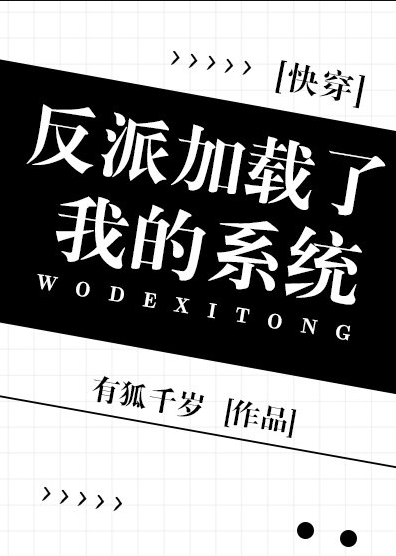

Gu Xiyu dirigió una tarea.
Necesitaba ir a algunos mundos pequeños para resolver a los villanos cuyo índice de peligro excedía el estándar, para que el mundo pudiera restaurar su armonía y belleza. Es solo que el sistema que le enviaron era un poco extraño. La primera frase que usó para saludarlo fue:
"¿Quién eres?"
Al principio, Gu Xiyu pensó que se trataba de un sistema humanizado superinteligente desarrollado recientemente por la Administración. Más tarde sintió que su sistema estaba enfermo.
Para luchar por la soberanía, los poderosos villanos lastimarán al protagonista. Gu Xiyu pensó que recibiría una orden para detenerlo con un cuchillo al villano.
El sistema decía: "Le envías un ramo de flores y es posible que no trate con el protagonista cuando está de buen humor".
Para destruir el imperio, el villano general del imperio herirá gravemente al príncipe protagonista.
Instrucción del sistema: "Si actúas lindo con él, puede aceptar tu solicitud y no exterminar a la raza humana".
El gran demonio del mundo del cultivo captura todo tipo de píldoras de cultivo inmortales para aumentar su energía.
El sistema decía: "De hecho, hay otra forma de que el villano progrese".
"¿Como?"
"Practica el cultivo dual con el villano".
Gu Xiyu:?
Debido a que sería castigado por rechazar la orden, sólo podría actuar de acuerdo con la orden. Sorprendentemente, la barra de progreso para la reducción del peligro mundial se movió. Pero el villano se estaba equivocando cada vez más.